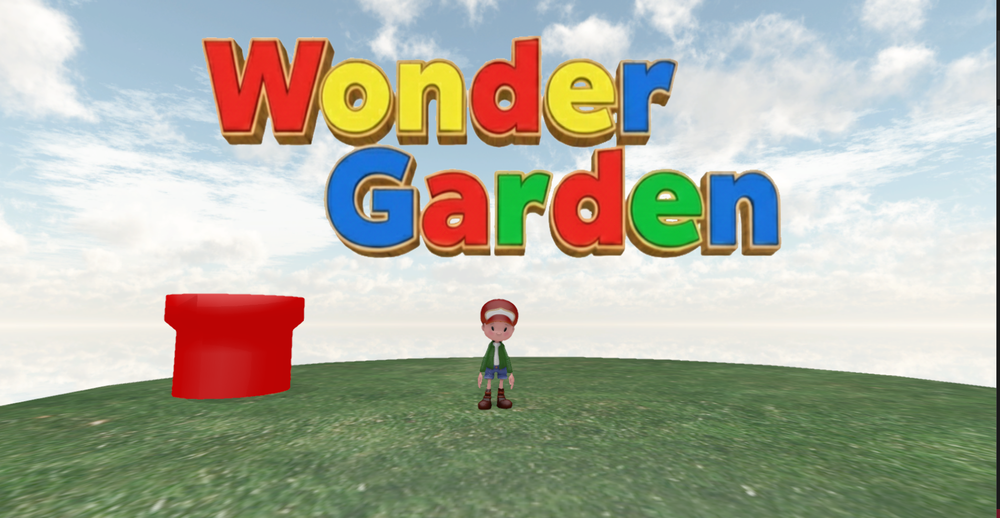
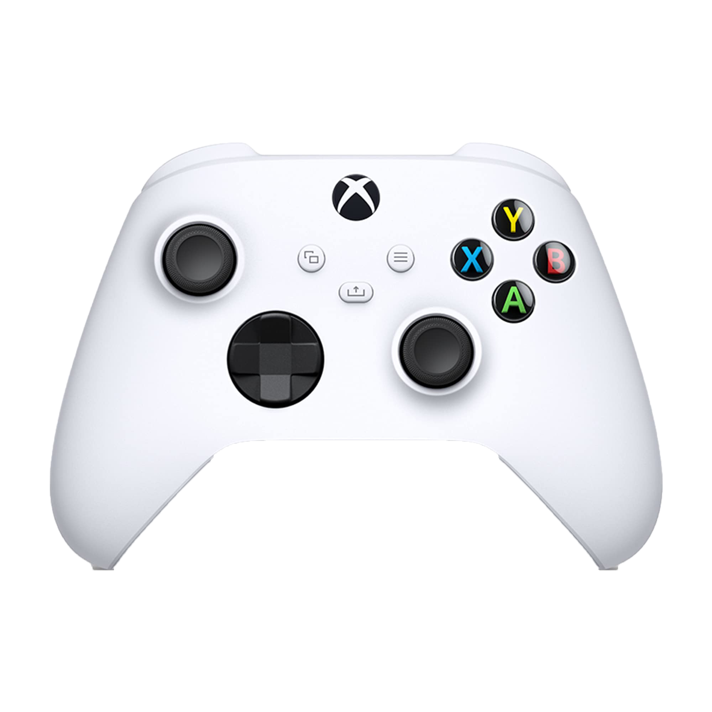
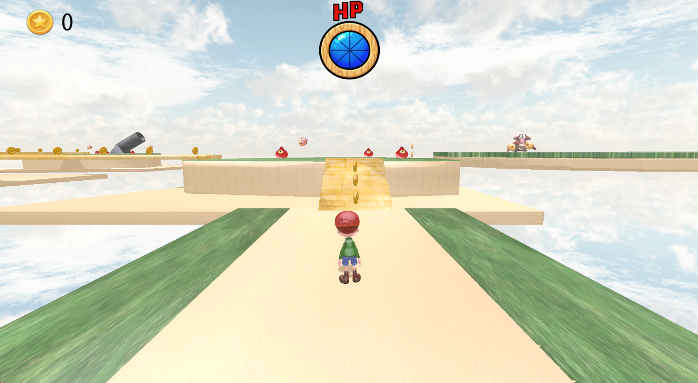
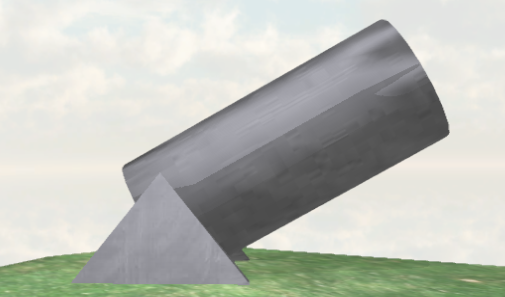
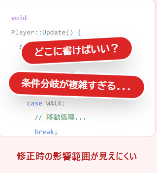
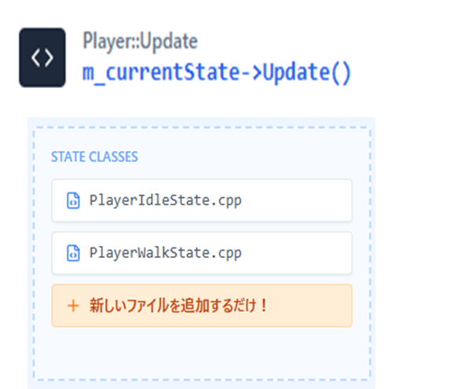
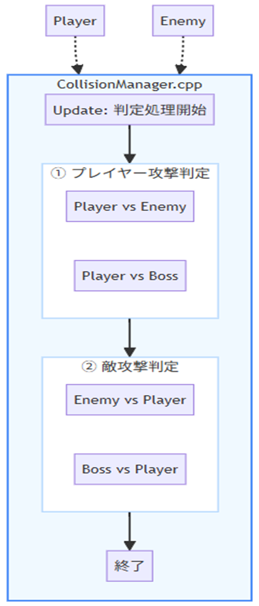

河原電子ビジネス専門学校 ゲームクリエイター科
林 彪
GitHub URL ： https://github.com/hayashihyou/Wonder-Garden
Youtube URL： https://youtu.be/CXDksX2rB2s
Aボタン：ジャンプ
Bボタン：決定キー/攻撃(パンチ)
Xボタン：ダッシュ
Lスティック,十字キー：移動
Rスティック：カメラ移動 


土管の中に判定を付けることでプレイヤーが土管の中にくぐった際にもう一つのつなげた土管の方に移動することができます。
プレイヤー大砲に近づく大砲の中に入り設定している向きと初速の勢いを持って発射し、重力で少しずつ勢いを落としていくことで放物線を描くような飛び方ができました。
今まででは、Update関数の中で状態遷移を行っていたのですが新しい状態を追加していく度に条件分岐が増えてしまいエラーの原因にはつながってしまいました。

ステートパターンを実装したことで新しくステートパターン用のクラスを用意することで状態遷移時の処理分が書きやすくなり、新しい条件を追加したい時は新しいクラス名を追加するだけで良いので、コードの保守性や状態遷移時のバグを抑制できました。

攻撃判定を管理するマネージャークラスを作りました。プレイヤーと敵は共通の当たる判定を持っていた為、敵同士の攻撃でやられていました。そこで、マネージャークラスを実装したことで攻撃判定時に”誰が”攻撃したかをわかるようにしました。よって、敵同士の当たり判定でやられることをなくすことができました。

HPバーは2種類作りました。現在HPを示す緑のバーと現在HPが減った分を追従して減らす赤のバーがあります。HPが減少時、緑のバーは即時に消えますが赤のバーが減った分のHPを追従することでダメージの余韻と手応えを感じるようにして、クオリティアップにもなりました。

ボス戦に入った時に演出がないとボス戦なのか伝わりづらいと思い実装しました。黒帯とボスのテクスチャを用意することで迫力と没入感を高めました。線形補間を用いて一定の数値で黒帯やテクスチャを点滅することでボス戦前のムービー感を出すことができました。

トゥーンシェーダー入れる前
トゥーンシェーダーを入れた後